"The model is the agent. The code is the harness."
这是 OpenHarness 的核心信念——模型提供智能，Harness 提供手、眼、记忆和安全边界。
一、OpenHarness 是什么？
OpenHarness是香港大学数据科学实验室（HKUDS）开源的轻量级 AI Agent 基础设施框架。它并不是另一个"聊天机器人"套壳，而是专注于 Agent Harness这一核心概念——即围绕 LLM 构建的完整基础设施层。
核心理念：
"The model is the agent. The code is the harness."
模型提供智能，Harness 提供双手、眼睛、记忆和安全边界。
项目定位：
-`oh`（OpenHarness CLI）：核心轻量级 Agent 基础设施，工具调用、技能、记忆、多智能体协调
-`ohmo`：基于 OpenHarness 构建的个人 AI Agent 应用，可接入 Feishu / Slack / Telegram / Discord
技术指标：
- Python ≥ 3.10
- 43+ 工具实现
- 114 单元 / 集成测试，全部通过
- 6 套 E2E 测试套件
- 支持 Claude / OpenAI / Copilot / Codex / Moonshot / GLM / MiniMax / NVIDIA NIM 等多个 LLM 后端
二、软件架构
分层架构图：
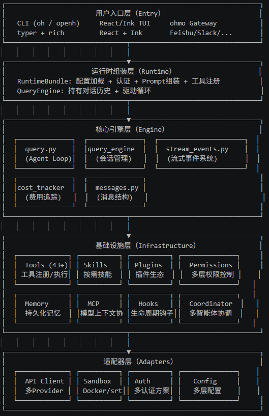
部分代码结构：
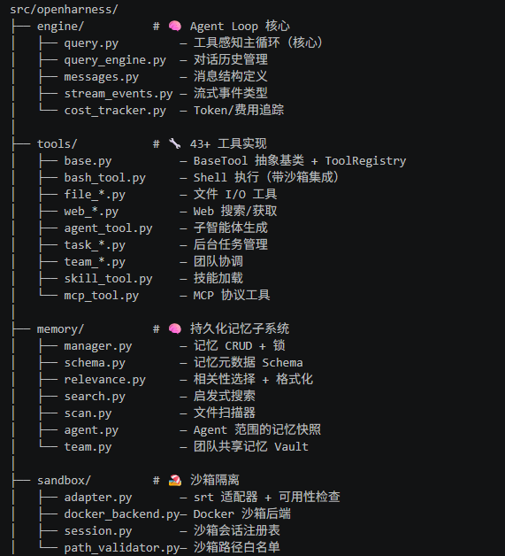
三、核心组件
3.1 工具系统(Tools)
工具是 OpenHarness 的"双手"，共 43+ 个，按功能分类：
类别 | 工具 | 说明 |
文件 I/O | `read_file`, `file_edit`, `file_write`, `glob`, `grep` | 核心文件操作 + 权限检查 |
Shell | `bash` | Web 和代码搜索 |
Web | `web_fetch`, `web_search` | Jupyter notebook 编辑 |
多智能体 | `agent`, `send_message`, `team_create`, `team_delete` | 异步任务生命周期 |
任务管理 | `task_create/get/list/update/stop/output` | 后台任务状态机 |
MCP | `mcp_tool`, `list_mcp_resources`, `read_mcp_resource` | HTTP/stdio双传输 |
模式切换 | `enter_plan_mode`, `exit_plan_mode` | 工作模式切换 |
调度 | `cron_create/list/delete`, `remote_trigger` | 定时和远程触发 |
元工具 | `skill`, `config`, `brief`, `sleep`, `ask_user` | 知识加载、配置、交互 |
笔记本 | `notebook_edit` | Jupyter Cell编辑 |
图像 | `image_generation`, `image_to_text` | 多模态处理 |
每个工具的架构模式：
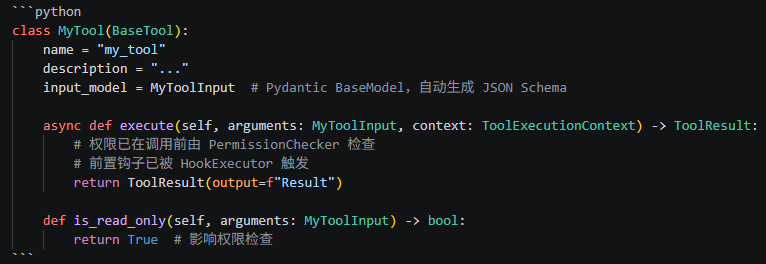
3.2 技能系统（Skills）
技能是按需加载的领域知识，以 Markdown 文件形式存在（`.md`）。区别于工具（执行能力），技能是知识注入。加载优先级（从低到高，后者可覆盖前者）：
1. 内置技能（`skills/bundled/`）
2. 用户级技能（`~/.openharness/skills/` 或 `~/.claude/skills/`）
3. 项目级技能（`<project>/.openharness/skills/` 等，按 git root 向上发现）
4. 插件技能
兼容性：与 anthropics/skills的 `SKILL.md` 格式完全兼容。
3.3 插件系统（Plugins）
插件以目录形式组织，格式兼容 [claude-code plugins]：
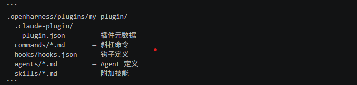
3.4 MCP（Model Context Protocol）
OpenHarness 实现了完整的 MCP 客户端，支持：
- HTTP 传输（v0.1.5 引入）
- stdio 传输
- 自动重连（断开后）
- JSON Schema 类型推断（无需手动映射）
- 工具调用 + 资源读取
四、Agent Loop 深度剖析
这是 OpenHarness 最核心的部分，位于 `src/openharness/engine/query.py`。
4.1 主循环流程
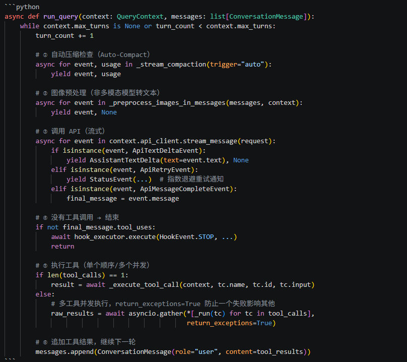
4.2 关键设计决策
并发工具执行
单工具调用时顺序执行以保证流式事件的即时响应；多工具调用时使用 `asyncio.gather` 并发执行，且 `return_exceptions=True` 确保一个工具失败不会取消其他工具（Anthropic API 要求每个 `tool_use` 必须有对应的 `tool_result`，否则拒绝后续请求）。
指数退避 API 重试
通过 `ApiRetryEvent` 将重试状态实时通知给 UI，用户可以看到"Retrying in 2.3s (attempt 2 of 5)"的提示，而非静默等待。
Token 上限保护
`_bounded_completion_tokens()` 对各 Provider 实现了保守的 per-request 输出 token 上限（最大 128K），防止部分 OpenAI 兼容 Provider 因 `max_tokens` 过大而拒绝请求。若 Provider 返回 `supports at most N completion tokens`，系统能正则解析该 N 值并自动降级重试。
反应式压缩（Reactive Compact）
当 API 返回"prompt too long"类型的错误时，系统触发一次强制压缩（`force=True`）并自动重试，用户无感知。
工具结果卸载
超过内联长度限制的工具输出会被写入 `~/.openharness/tool_artifacts/` 目录，对话中仅保留截断预览，防止超长输出污染上下文窗口。
4.3 工具执行的完整生命周期
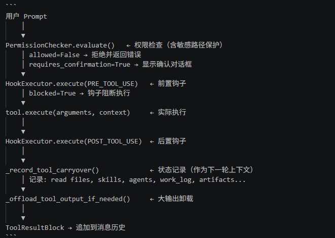
4.4 Tool Metadata Carryover（工具状态透传）
这是一个独特的上下文持续性机制。每次工具执行后，系统会更新 `tool_metadata` 字典，记录：
键 | 内容 | 上限 |
`task_focus_state` | 无 | |
`read_file_state` | 最近读取的文件路径、行范围、预览 | |
最近调用的技能名称 | ||
子agent活动摘要 | ||
已生成的Agent任务（含task_id） | ||
`recent_work_log` | 最近操作的简短日志 | |
已验证的工作条目 | ||
`active_artifacts` | 当前活跃的文件/URL列表 |
这些状态会在每轮对话前注入系统 Prompt，帮助模型维持"工作意识"，在跨上下文压缩后也能保持任务连续性。
五、Memory 管理机制
OpenHarness 实现了一套多层次、结构化的持久化记忆系统。
5.1 记忆架构
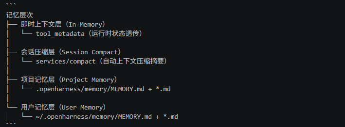
5.2 记忆文件格式
每个记忆文件是带有 YAML frontmatter 的 Markdown 文件：
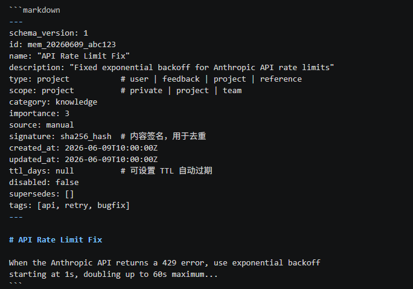
`MEMORY.md` 作为索引文件，记录所有条目：
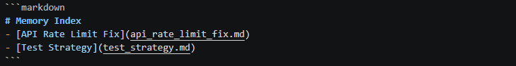
5.3 记忆 CRUD 与安全
创建/更新（`add_memory_entry`）：
1. SHA-256 内容签名去重（`compute_memory_signature`），避免重复记忆
2. 文件级排它锁（`exclusive_file_lock`）防止并发写入冲突
3. 原子写入（`atomic_write_text`）保证写入安全
团队记忆（Team Memory）：
- 写入前检查敏感信息（`check_team_memory_secrets`）
- 存储在独立的 team memory vault
软删除：记忆不会被物理删除，而是将 `disabled: true` 写入 frontmatter，同时从 `MEMORY.md` 索引中移除。
5.4 相关记忆选择与注入
`select_relevant_memories()`的工作流程：
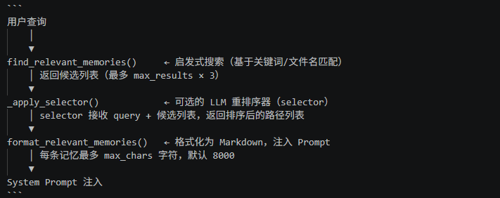
5.5 Auto-Compact（自动上下文压缩）
这是记忆管理中最复杂的机制，位于 `services/compact/`：
触发条件：
-`auto`：每轮 Agent 循环开始前检查，当估算 token 数接近阈值时触发
-`reactive`：API 返回"prompt too long"错误时强制触发
-`manual`：用户执行 `/compact` 命令
两阶段压缩：
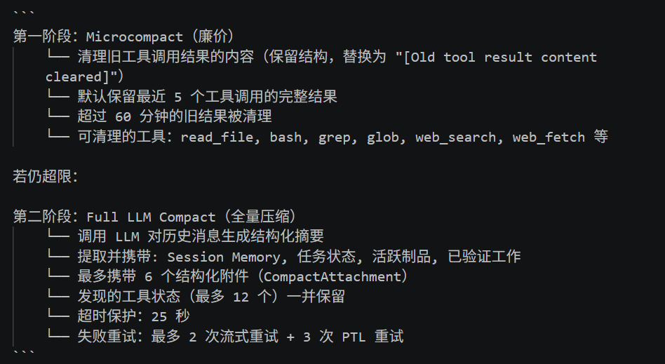
压缩后的状态持续性：通过 `carryover_metadata`（即 `tool_metadata`），任务状态、已加载技能、Agent 活动等元数据在压缩边界上完整保留，确保长时间运行的多日会话不会丢失工作上下文。
六、Dry-Run 安全预览机制
`oh --dry-run` 是 OpenHarness 的一个独特功能，允许用户在不执行任何实际操作的情况下预览运行时配置。
6.1 Dry-Run 的原则
完全静态，绝不执行：
- ❌ 不调用模型（LLM）
- ❌ 不执行工具或生成子 Agent
- ❌ 不连接 MCP 服务器
- ✅ 解析配置、认证状态、Prompt 组装、技能/命令/工具发现
- ✅ 检测明显的 MCP 配置问题
6.2 预览构建流程
`_build_dry_run_preview()` 的内部工作：
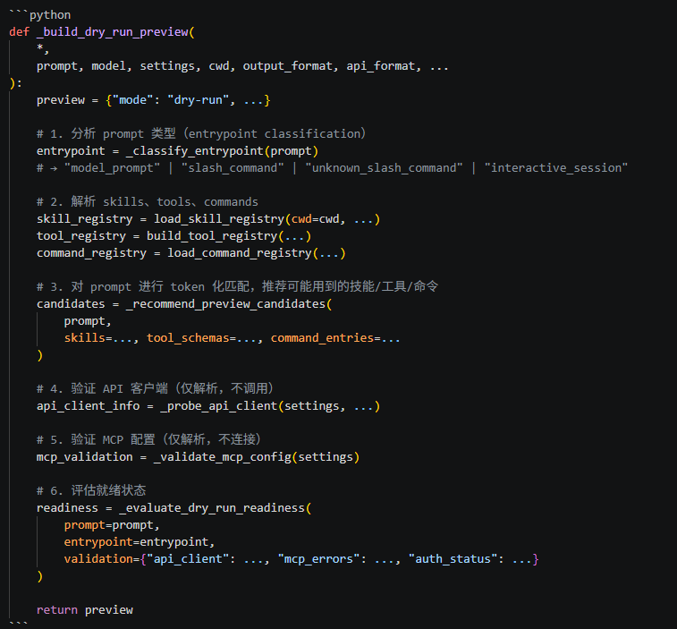
6.3 就绪状态三级评定
级别 | 含义 | 典型场景 |
`ready` | 所有检查通过 | |
`warning` | 可以解析会话，但存在问题 | |
无法按当前配置运行 |
每种状态都附带 `next_actions` — 具体可操作的修复建议，而非模糊错误信息。
6.4 斜杠命令行为分类
`_dry_run_command_behavior()` 将所有注册命令分为三类：
-`read_only`：`/help`, `/status`, `/context`, `/skills`, `/mcp`, `/doctor` 等 18 个
-`stateful`：`/compact`, `/memory`, `/plugin`, `/permissions`, `/commit`, `/autopilot` 等 30+ 个
-`unknown`：来自插件或自定义的未知命令
6.5 Prompt 智能预测
对于普通文本 Prompt，dry-run 会使用 `_score_candidate_match()` 进行 token 化关键词匹配，预测：
- 可能会激活哪些 Skills（描述相关性评分 ≥ 4）
- 可能会调用哪些 Tools（≥ 4 分）
- 可能会触发哪些 Commands（≥ 8 分，命令阈值更高）
七、Sandbox 沙箱隔离机制
7.1 双后端架构
OpenHarness 提供两种沙箱后端：
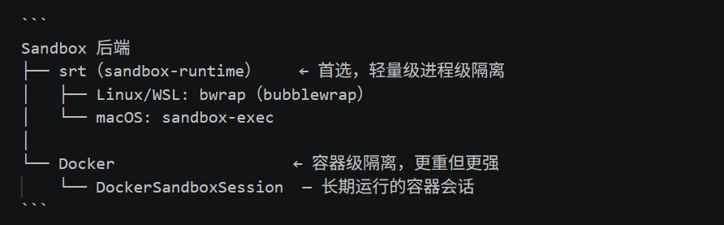
7.2 srt 后端（sandbox-runtime）
`wrap_command_for_sandbox()` 在工具执行（尤其是 `bash` 工具）前包裹命令：
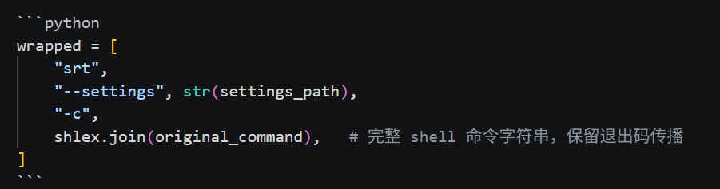
配置文件（`build_sandbox_runtime_config()`）控制：
- 网络：`allowedDomains` / `deniedDomains`
- 文件系统：`allowRead` / `denyRead` / `allowWrite` / `denyWrite`
7.3 Docker 后端
`DockerSandboxSession` 管理单个 OpenHarness 会话的长期运行容器：
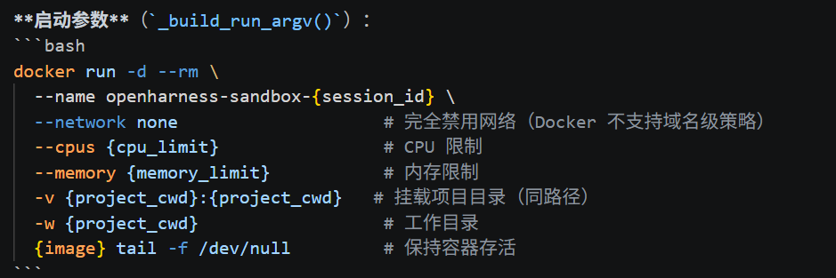
注意：Docker 后端当前不支持 `allowed_domains`/`denied_domains`，强制使用 `--network none`，保守失败（fail-closed）。
安全处理：
- 进程退出时通过 `atexit` 自动停止容器，防止泄漏
- 异步 `stop()`，同步 `stop_sync()`，超时保护（15s 异步 / 10s 同步）
7.4 内置敏感路径保护
`PermissionChecker` 中硬编码了不可绕过的敏感路径保护（独立于沙箱，始终生效）：
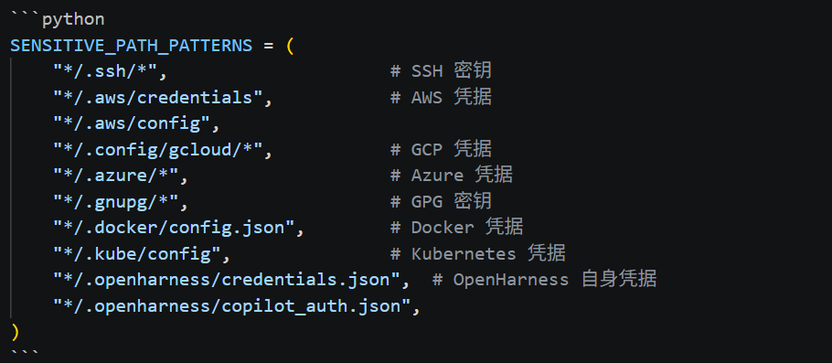
这是防御性深度纵深措施，防御 LLM 方向的 Prompt Injection 攻击（即攻击者通过注入恶意内容让 AI 读取用户凭据文件）。
八、写在最后
OpenHarness 是少数明确提出并系统实现 Agent Harness概念的项目。它将 LLM 与基础设施之间的关系表达为：
完整 Agent = LLM（智能）+ Harness（执行基础设施）
Harness = 工具 + 知识（技能）+ 观察（输出/记忆）+ 行动（权限/安全）
这不仅是哲学，而是反映在代码组织中：每个子系统都清晰地对应 Harness 的一个功能面。相比其他agent，OpenHarness有以下优缺点：
优点：
架构清晰、轻量，代码完全透明可审计，适合理解 Agent Harness 内部实现
支持 8+ LLM Provider，且独特地支持复用 Copilot/Claude/Codex 现有订阅（无需另购 API Key）
--dry-run 预验证 + 三级就绪评定，在 Agent 框架中几乎唯一
跨上下文压缩的任务状态持续性（carryover_metadata），支持多日长会话不丢失工作上下文
纵深安全防御：沙箱（srt/Docker）+ 硬编码敏感路径保护 + 多级权限模型，抗 Prompt Injection
Skills/Plugins 格式兼容 anthropics/claude-code 生态，迁移成本低
缺点：
相比 LangChain/LangGraph 的通用性，OpenHarness 更专注于"单 Agent 完整运行时"，不适合构建复杂的有向图/工作流编排
Docker 沙箱强制完全断网（不支持域名级策略），灵活性不足
Windows 原生支持有磕绊（命令名冲突、沙箱不可用）
社区和生态规模相比 LangChain/AutoGen 仍在早期阶段，第三方插件数量有限
多智能体协调相比 AutoGen/CrewAI 较基础，缺乏专门的协调图/角色编排抽象
如果你是一个想要一个轻量 Harness 而不是重型框架的开发者，或者你是一个想在自己的研究/实验中使用完整 Agent 基础设施的学者，OpenHarness值得一试。
项目地址：https://github.com/HKUDS/OpenHarness
— END —
关注「深智 AI」，获取AI 技术深度解析